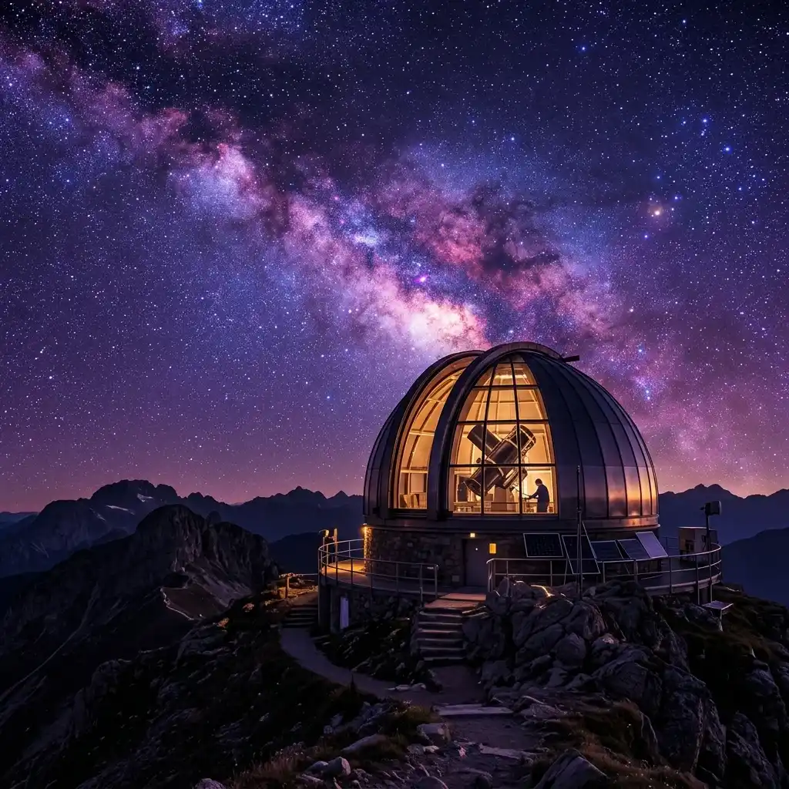
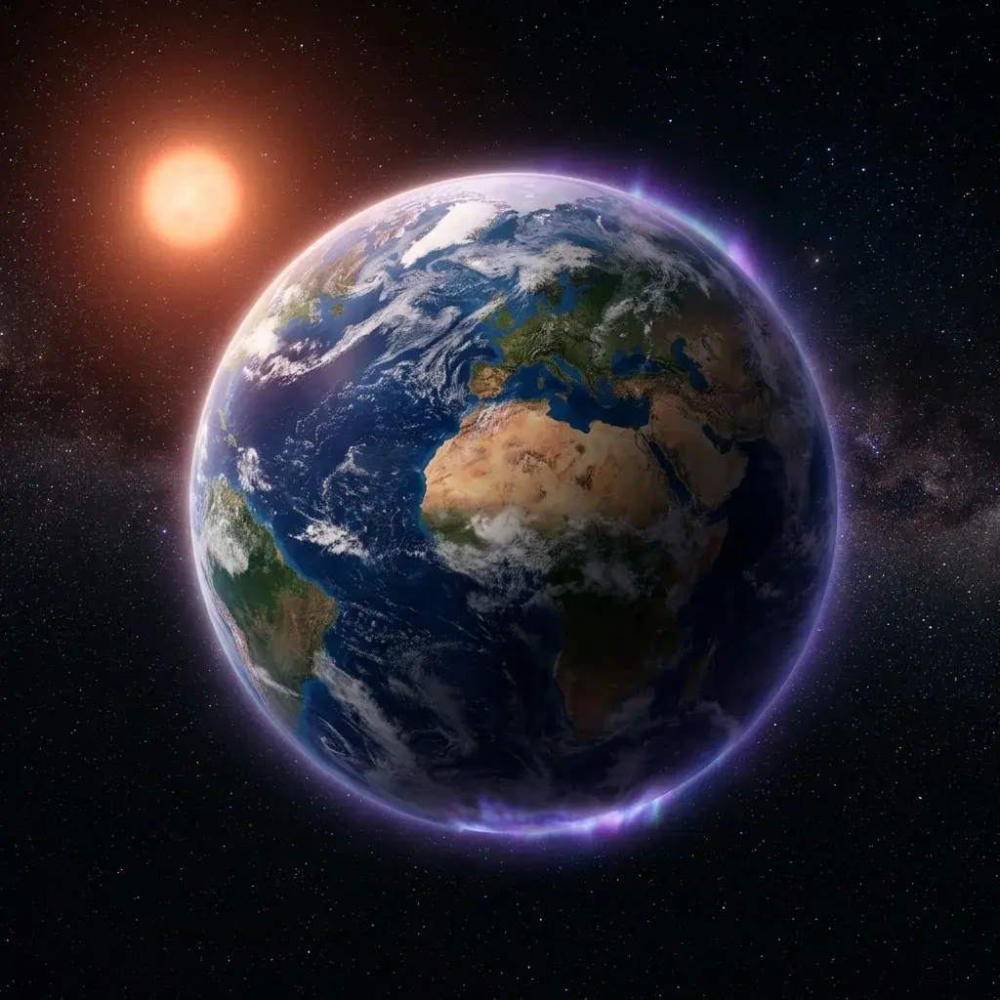
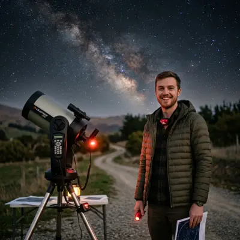

.webp)

Explore the Infinite Universe.
Discover the wonders beyond our world. Stackly connects you with remote observatories, constellation trackers, and real-time celestial maps to illuminate the night sky.
Featured Celestial Objects
Marvel at the breathtaking structures floating in the cosmic ocean, captured by state-of-the-art space telescopes.

Orion Nebula (M42)
A massive, glowing stellar nursery situated in the Milky Way, visible to the naked eye. M42 is the closest region of massive star formation to Earth, acting as an astrophysicist's laboratory.

Kepler-186f
The first validated Earth-size planet orbiting within the habitable zone of another star. Receiving about one-third of the sunlight that Earth gets, its liquid status remains a mystery.

Sagittarius A*
The supermassive black hole anchor at the geographical center of our Milky Way galaxy. Possessing a mass 4.1 million times that of our Sun, it warps the fabric of local spacetime.
Popular Observatories
Remote telescopes perched on the highest mountain peaks, peering through the atmosphere into deep time.


Worlds of Our Solar System
Journey through the celestial bodies orbiting our host star, styled with premium telemetry and interactive data.
Cosmic Evolution
Trace the primary milestones of the universe, starting from the singularity 13.8 billion years ago.
The Big Bang
The universe began as an extremely hot, dense point (singularity). It exploded and began expanding, cooling down rapidly to form basic subatomic particles.
Cosmic Dark Ages
Before the first stars formed, the universe was filled with cold hydrogen and helium gas. No light sources existed, rendering the universe entirely dark.
First Stars Spark
Gravity pulled dense clouds of cold gas together, igniting nuclear fusion. The cosmic dark ages ended as the universe was illuminated by massive star groups.
Milky Way Birth
Dwarf galaxies crashed and coalesced under gravity, giving shape to the spiral core of our home galaxy, the Milky Way.
Stackly Observation Metrics
Our networks constantly collect telemetry, tracking celestial shapes and registering coordinates in the shared public database.
Observation Data
Upcoming Sky Events
Mark your calendar for these spectacular alignments, eclipses, and meteor showers happening soon.
Perseids Meteor Shower
One of the most prolific meteor showers of the year, peaking with up to 100 meteors per hour. Best observed after midnight in dark sky areas.
Partial Lunar Eclipse
A partial lunar eclipse will be visible across the Americas, Europe, and Africa. The Earth shadow will cast a deep amber red across the moon face.
Orionids Meteor Shower
Produced by dust grains left behind by Halley Comet. Famous for fast, bright meteors, originating from the constellation of Orion.
Testimonials
What professional astrophysicists and amateur stargazers say about Stackly astronomical services.
"Stackly's web observatory controls made my exoplanet telemetry gathering extraordinarily efficient. I could coordinate schedule bookings across telescopes in Chile from my campus desk."
Dr. Sarah Jenkins
Senior Astrophysicist, MIT
"The sky-guide interactive constellation lines and live calendar alerts are my absolute favorites. I never miss a meteor shower peak or partial eclipse anymore thanks to Stackly."
Marcus Henderson
Amateur Stargazer"The premium glassmorphism interfaces and fluid 3D orbit visuals match the beauty of the cosmos. It's the most responsive astronomy website I've ever encountered."
Elena Rostova
Research Fellow, ESA"Using Stackly for my astronomy course lectures has been a revelation. The real-time mapping of satellite paths gives my students a tactile feel for orbital mechanics."
Dr. Alan Vance
Cosmology Professor, Cambridge"The visibility forecasts are incredibly accurate. I've captured some of my best deep space nebula photos by planning my shooting windows exactly around Stackly's atmospheric seeing data."